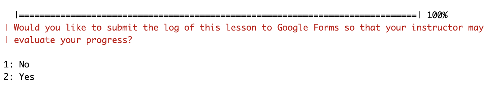
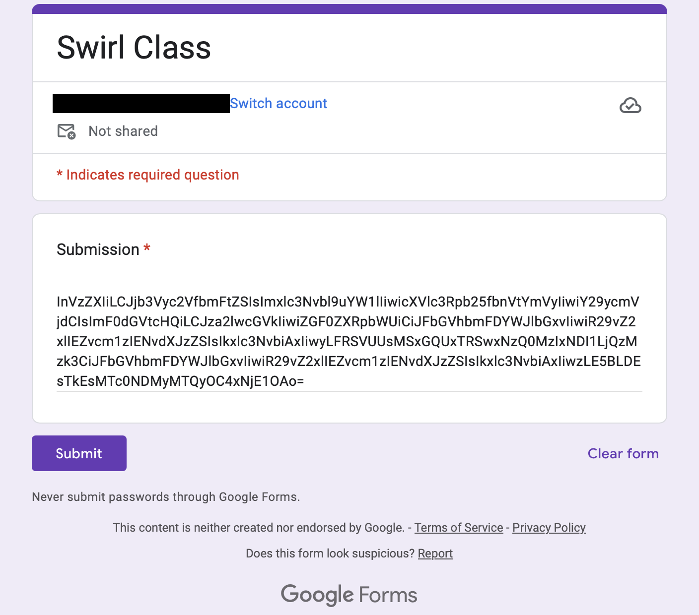

Assignment 1
Overview
Due date: 07/08/25 at 11:59pm
Most programming languages are similar in their underlying logic, but differ in execution, efficiency, and, more importantly, their syntax. R is one of the most popular languages used for data analysis in biomedical research. Its programming syntax is unique and differs from other popular languages in the same category as it like Python. Gaining a better understanding of R’s core features and becoming familiar with its syntax will help you perform analyses more effectively and efficiently.
In the Swirl lessons for this week, you will learn the following:
- Navigating files and directories
- Assigning and using variables
- Creating, modifying, and subsetting vectors
- Creating and modifying sequences
- Handling missing values
- Simple matrices and dataframes
- Logics (TRUE, FALSE, AND, OR, etc.) in R
- Gain experience with base features in R
Swirl Course Setup
In RStudio, install and load the swirl package
install.packages("swirl")library("swirl")Navigate to this link. Download the Swirl lesson file
1_R_Programming.swc. Move it into your working directory for the class.Once you have the file in your working directory, in the console of RStudio type the command below and after the
swc_path =type"and then hittabto interactively choose the1_R_Programming.swcfile you just downloaded from your working directory. The command will look something likeinstall_course(swc_path = "1_R_Programming.swc"). Run the command to install the course.install_course(swc_path = )Start Swirl by typing the following command
swirl()
Working through the Lessons
Please enter your full name together when asked what you want to be called by e.g. JaneDoe
Complete all lessons:
- 1: Basic Building Blocks
- 2: Workspace and Files
- 3: Sequences of Numbers
- 4: Vectors
- 5: Missing Values
- 6: Subsetting Vectors
- 7: Matrices and Data Frames
- 8: Logic
You can take breaks between lessons (like shutting down Swirl and exiting RStudio), just use the same name when logging in for documenting purposes on the instructor’s end.
If you start a lesson, please complete it fully before taking a break. If you stop RStudio in the middle of a lesson, your progress for that lesson may still be saved in the history for that package locally, but will not be saved or sent to us on the instructor’s end.
If you do not get to the Google Form end of any lesson, please email one of the instructors as soon as possible.
Submission
FYI: You need a google account to submit the assignment.
Swirl will navigate you to the submission Google Form of each lesson. However, review the instructions below before submitting to make sure you are able to submit correctly.
When submitting please make sure the box is not empty, if it is please email one of the instructors.
At the end of each lesson the following question will appear, enter the selection Yes to be redirected to your autofilled Google Form submission

Once you’ve been redirected, your Swirl activity will be autofilled into the submission box, just hit the Submit button

- If you do not get to the Google Form at the end of any lesson, please email one of the instructors as soon as possible.